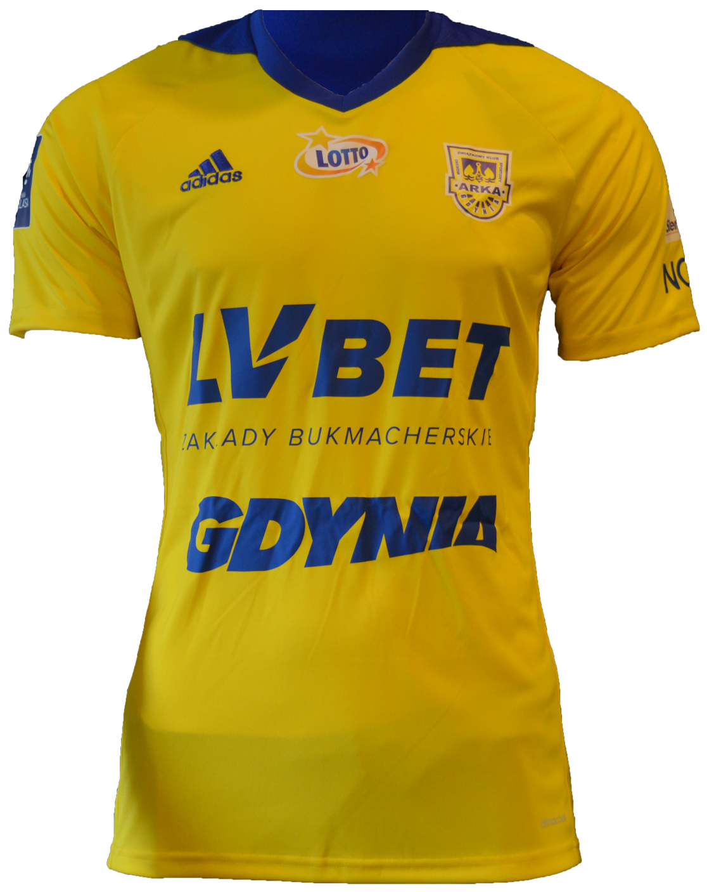
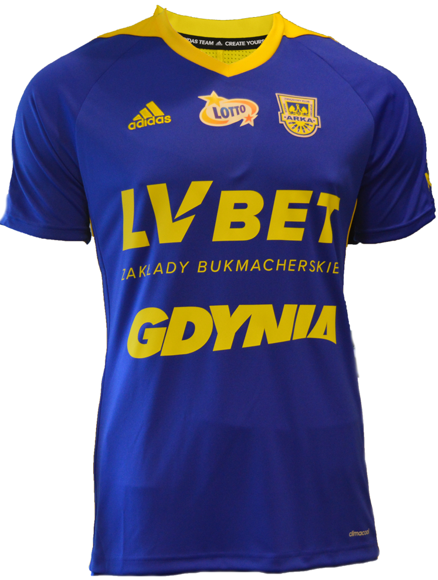
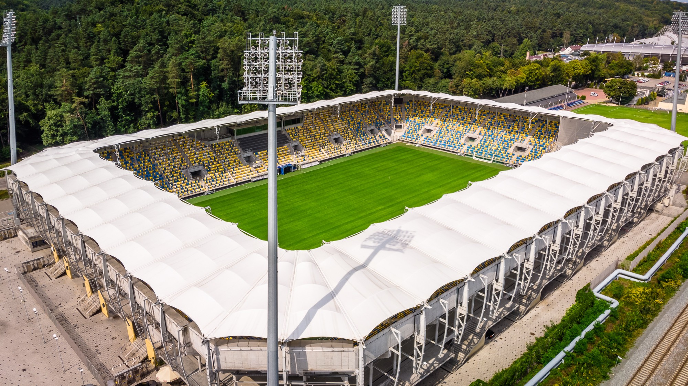

Najnowsze Informacje

ARKA GDYNIA


Informacje o klubie:
- MORSKI ZWIĄZKOWY KLUB SPORTOWY ARKA GDYNIA
- Adres: Olimpijska 5, 81-538 Gdynia
- Stadion: Stadion Miejski (pierwotnie GOSiR) pojemność - 15 139 miejsc
- Prezes:Grzegorz Stańczuk (od 28 sierpnia 2019)
- Trener:Jacek Zieliński (od 12 kwietnia 2019)



Napastnicy
Pomocnicy
Obrońcy
Bramkarze
Fanatics Zone
ZGODY
Cracovia
Lech Poznań
KSZO Ostrowiec Świętokrzyski
Gwardia Koszalin
Górnik Wałbrzych
Polonia Bytom
Zaglębie Lubin
KOSY
Lechia Gdańsk
Legia Warszawa
Zagłębie Sosnowiec
Pogoń Szczecin
Wisła Kraków
Śląsk Wrocław